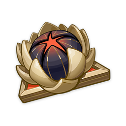
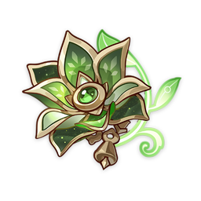

Genshin Impact · Versión 7.2
Análisis del Rol y Escalado
Nefer es un personaje de elemento Dendro originario de Nod-Krai que utiliza Catalizador y se posiciona en el tier T0 (SS) Main DPS dentro del rol de Main DPS Dendro de Florecimiento Lunar (Ataque Cargado Especial). Su rendimiento en combate gira en torno a este eje principal: Florecimiento Lunar escala con Maestría Elemental y Crítico (no usar cáliz Dendro).
Para maximizar su aporte en el equipo, la configuración prioritaria combina Relicario de la Verdad con el conjunto de artefactos Night of the Sky's Unveiling (4 piezas), respetando la jerarquía de estadísticas Maestría Elemental (500+) > Prob. Crítica (40–50% sin set) > Daño Crítico (220%+) > Recarga (opcional 130%). y subiendo sus habilidades en orden: Habilidad Elemental (E) > Definitiva (Q) >>> Ataques Normales.
Mejores Armas
Opciones recomendadas ordenadas por rendimiento según el meta actual y compatibilidad con sus rotaciones:
-
 Relicario de la Verdad ★★★★★BiS Firma88.2% Daño Crítico, +8% Prob. Crítica, hasta +120 ME y +36% Daño Crítico en Florecimiento Lunar.
Relicario de la Verdad ★★★★★BiS Firma88.2% Daño Crítico, +8% Prob. Crítica, hasta +120 ME y +36% Daño Crítico en Florecimiento Lunar. -
 Espejo Tejenoches ★★★★★Alternativa 5★265 ME; +120 ME y +40% Daño de Florecimiento Lunar para el equipo.
Espejo Tejenoches ★★★★★Alternativa 5★265 ME; +120 ME y +40% Daño de Florecimiento Lunar para el equipo. -
 Escrituras del Fluir Sempiterno ★★★★★Alternativa 5★88.2% Daño Crítico y fuerte bono de Daño en Ataques Cargados.
Escrituras del Fluir Sempiterno ★★★★★Alternativa 5★88.2% Daño Crítico y fuerte bono de Daño en Ataques Cargados. -
 Escarcha del Albor ★★★★Mejor 4★55.1% Daño Crítico; +72 ME tras Cargado y +48 ME tras Skill.
Escarcha del Albor ★★★★Mejor 4★55.1% Daño Crítico; +72 ME tras Cargado y +48 ME tras Skill. -
 Lámpara Medulaoscura ★★★★Mejor F2P Forja221 ME; aumenta +48% Bloom y +12%/24% Daño de Florecimiento Lunar.
Lámpara Medulaoscura ★★★★Mejor F2P Forja221 ME; aumenta +48% Bloom y +12%/24% Daño de Florecimiento Lunar.
Mejores Sets de Artefactos
Combinaciones de 4 piezas o mezclas de 2 piezas para maximizar su contribución:
-
 Night of the Sky's Unveiling (4 piezas) BiS Lunar
Night of the Sky's Unveiling (4 piezas) BiS Lunar+80 ME (2p); +15%/30% Prob. Crítica y bono de Daño Lunar en equipo.
-

Gilded Dreams (4 piezas) Alternativa ME+80 ME y hasta +150 ME según elementos del equipo.
-

Deepwood Memories (4 piezas) Solo si nadie más lo lleva-30% RES Dendro a enemigos tras golpear con Habilidad o Definitiva.
Estadísticas Principales y Secundarias
Atributos prioritarios en artefactos para un balance óptimo de daño o soporte:
| Pieza | Estadística Principal |
|---|---|
| Reloj (Arenas) | Maestría Elemental |
| Cáliz | Maestría Elemental |
| Corona | Daño Crítico / Prob. Crítica |
Prioridad de Subestadísticas
- Maestría Elemental (500+) > Prob. Crítica (40–50% sin set) > Daño Crítico (220%+) > Recarga (opcional 130%).
Prioridad de Talentos
Habilidad Elemental (E) > Definitiva (Q) >>> Ataques Normales
Objetivos de Estadísticas (Nivel 90)
Valores de referencia verificados para evaluar el equipamiento de Nefer en nivel 90 con artefactos de 5 estrellas:
| Atributo | Meta Recomendada |
|---|---|
| Vida | 17,000 |
| Ataque | 1,100 |
| Defensa | 750 |
| Maestría Elemental | 500+ ME |
| Recarga de Energía | 100% – 130% ER |
| Balance Crítico | 40–50% base (sin set) / 220%+ CD |
Talentos de Combate y Materiales (Nivel 1 al 10)
Habilidades principales de Nefer y desglose exacto de libros, materiales y Mora para mejorar sus talentos:


Composiciones de Equipo Recomendadas
Alineaciones con mayor sinergia elemental y amplificación de daño en el Abismo y Teatro Fantasía:
Materiales de Ascensión (Nivel 1 al 90)
Recursos totales requeridos para desbloquear las 6 fases de ascensión de Nefer. Coste total de Mora en ascensiones: 420.000 Mora.


Sinergias y Guías Relacionadas
Explora las fichas de armas, artefactos y materiales de los principales compañeros de equipo para Nefer: